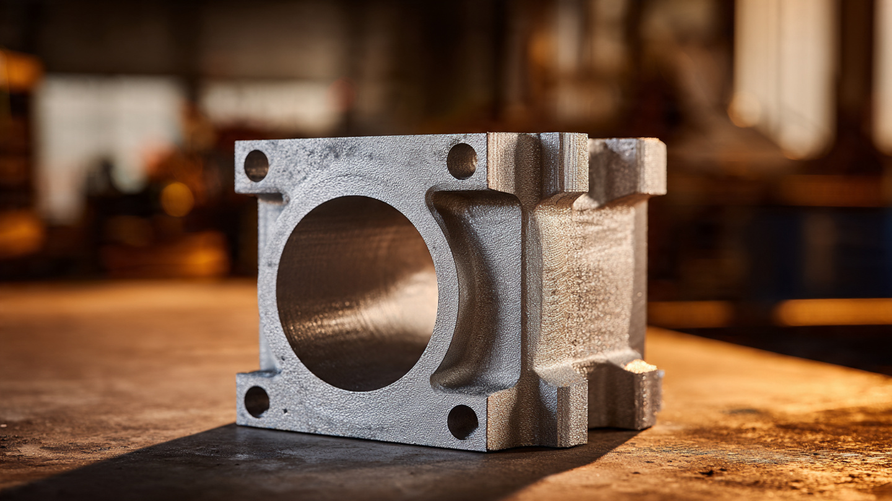

1.74 g/cm³: Why Magnesium Finally Arrived in EV Motor Housings

The Obvious Metal Nobody Used
Magnesium's density is 1.74 g/cm³. Aluminum's is 2.70. That is a 35.6 percent difference, and it has been obvious to every powertrain engineer since the 1960s. Volkswagen used magnesium crankcases in air-cooled Beetles. Porsche cast magnesium engine housings for the 911 through 1968. It is not exotic. It is the eighth most abundant element in Earth's crust, the third most abundant dissolved mineral in seawater, and cheaper to extract today than it was when Ferdinand Porsche first poured it into a mold.
So why did the automotive industry spend the next fifty years retreating from it? Three reasons, all of them real. First, galvanic corrosion. Magnesium sits near the bottom of the galvanic series, more anodic than nearly every structural metal it contacts. Bolt a steel fastener into a magnesium housing in the presence of any electrolyte, and the magnesium corrodes preferentially. In a motor housing, with coolant flowing through internal passages and condensation forming on external surfaces, the electrolyte is always present. Second, creep. Magnesium alloys soften under sustained load above roughly 120°C. Motor housings under continuous high-power draw regularly exceed that threshold. A housing that slowly deforms under thermal load loses its precision fits, which in a motor means bearing alignment, air gap consistency, and seal integrity all begin to drift. Third, flammability. Magnesium ignites when machined into fine chips or dust, burning at approximately 2,200°C with a white flame that cannot be extinguished with water. Every motor housing requires post-casting machining. Every machine shop knows the fire risk.
Aluminum avoids all three problems. It is galvanically milder, thermally stable to well beyond motor operating temperatures, and entirely nonflammable under machining conditions. That weight penalty is real, but for most of automotive history, the engineering cost of managing magnesium's failure modes exceeded the value of saving a few kilograms on a casting. That calculation changed when electric vehicles made every gram of powertrain mass a direct subtraction from range.
What Changed: The TL300
InfiMotion Technology, based in Shanghai and supplying drive units to Geely, SERES, and several other Chinese OEMs, debuted the TL300 at the 5th International Forum on Automotive Power Systems in Songjiang, Shanghai, in May 2026. InfiMotion describes it as the world's first mass-produced dual motor assembly using a magnesium-aluminum alloy housing. Mass production is the operative phrase. Prototype magnesium motor parts have existed in labs for years. Casting one housing is not the achievement. Casting thousands while maintaining dimensional tolerance, corrosion resistance, and thermal performance through a production lifecycle is.
Inside the magnesium housing sit two permanent magnet synchronous motors, each rated at 170 kW continuous with an 18,000 rpm ceiling. Paired with them are two silicon carbide inverters and a common power control module, all sharing a single thermal management circuit. Total system output is 340 kW with torque vectoring capability delivering up to 3,400 Nm per motor. InfiMotion claims sub-five-second 0-100 km/h acceleration and, critically, no power derating across 20 consecutive full-load cycles. That last specification matters because thermal derating is the silent enemy of EV performance. Any motor can produce peak power once. Producing it twenty times in a row without the control unit pulling back output is an engineering statement about thermal capacity.
Solving Corrosion at the Housing Level
InfiMotion's magnesium-aluminum alloy for the TL300 housing is not a general-purpose casting alloy. Standard automotive magnesium alloys like AM60B and AZ91D have been the workhorse choices for decades, offering good castability and moderate corrosion resistance. For a motor housing that must bolt to steel mounting brackets, contain copper windings, and circulate glycol-based coolant through internal passages, moderate corrosion resistance is insufficient.
InfiMotion's approach combines alloy formulation with surface engineering. Internal coolant passages are isolated from the magnesium substrate by barrier coatings that prevent direct contact between the alloy and the coolant stream. External surfaces receive multi-layer conversion coatings, and fastener interfaces use engineered bushings or coated inserts to break the galvanic couple between steel bolts and the magnesium casting. None of these techniques are individually novel. Conversion coatings on magnesium date to the 1940s. Insulated fastener solutions exist in aerospace applications. What matters is applying them all simultaneously in a high-volume die-casting process that must hit automotive cost targets, not aerospace ones.
Cooling as a Structural Enabler
The TL300's 360-degree bidirectional full-oil cooling system is not merely a thermal management feature. It is the enabling technology that allows magnesium to serve as the structural housing in the first place. By keeping housing temperatures consistently below the alloy's creep threshold, the cooling architecture transforms the material selection from a compromise into a viable engineering choice.
Oil flows in two directions simultaneously through channels cast into the housing walls, creating a counter-flow pattern that prevents hot spots from forming. In a conventional single-direction cooling circuit, the inlet side of the housing runs cool while the outlet side absorbs progressively more heat. Temperature gradients across the housing can reach 30-40°C in high-load conditions, which creates differential thermal expansion. In an aluminum housing, this causes minor stress. In a magnesium housing operating near its creep boundary, it could cause permanent deformation. Bidirectional flow halves the gradient by routing oil in opposing circuits that average out the thermal load across the housing surface.
Oil cooling rather than glycol cooling also eliminates one corrosion vector. Dielectric oil does not serve as an electrolyte the way water-glycol mixtures do. Internal passages can contact the magnesium alloy directly without the same galvanic risk that would exist with aqueous coolant. This simplifies the internal surface treatment requirements considerably.
The W-Pin Hairpin Topology
Inside the TL300's motors, the stator windings use what InfiMotion calls a W-pin hairpin topology. Conventional hairpin motors insert U-shaped flat copper conductors into the stator slots and weld them together at the ends to complete the winding circuits. Welding crowns at each end add axial length to the motor, typically 15-25 mm per side. They also introduce joints that can fail under thermal cycling and vibration.
Each W-pin conductor bends through three reversals instead of one. Each conductor spans more of the winding circuit in a single piece, reducing the total number of joints. InfiMotion's implementation eliminates end welds entirely, removing the welding crowns from both ends of the stator. Axial space savings are significant in a dual-motor configuration where two stator stacks share a common housing. Every millimeter of axial length removed from each motor is two millimeters recovered at the system level, space that translates directly to either a more compact package or room for additional bearing support.
InfiMotion's stator uses a closed-slot design where the slot openings facing the rotor are bridged by thin sections of the lamination steel rather than left open. Closed slots reduce torque ripple by smoothing the magnetic field transition as each rotor magnet passes across the stator face. That tradeoff means conductors cannot be inserted radially through the slot opening. They must be inserted axially from one end, which requires the W-pin geometry to be formed before insertion rather than bent in place. This is a manufacturing constraint that InfiMotion's process accommodates, and the NVH benefit, a quieter, smoother motor, is measurable on the vehicle.
Hybrid Power Electronics: SiC When You Need It, IGBT When You Do Not
The TL300's power control module uses a configuration InfiMotion calls intelligent hybrid parallel: silicon carbide MOSFETs and silicon IGBTs operating in the same inverter, with control algorithms dynamically selecting which devices carry current based on operating conditions.
Silicon carbide switches faster and with lower losses than silicon IGBTs, particularly at partial load. But SiC devices cost roughly three times more per amp of current capacity. In a conventional inverter design, the engineer picks one or the other: SiC for premium vehicles chasing efficiency, IGBT for cost-sensitive platforms accepting the loss penalty. At light and moderate loads where switching losses dominate and efficiency gains are largest, the hybrid approach runs SiC, then brings IGBTs online at peak power where conduction losses dominate and SiC's advantage narrows.
The result is a power electronics module that achieves near-SiC efficiency at partial load, where EVs spend most of their driving time, while using SiC devices only for the current they are most efficient at handling. Overall semiconductor cost falls because fewer SiC devices are needed, and the system-level efficiency, 89.5 percent peak for the complete TL300, reflects the optimized allocation. For perspective, a pure IGBT dual-motor system of equivalent power typically achieves 85-87 percent peak efficiency. That difference is 2-4 percentage points, which at highway cruise translates to 8-15 kilometers of additional range per full charge cycle.
The Adjustable Magnetic Field
Alongside the TL300, InfiMotion showed a motor with an adjustable magnetic field, a concept that addresses one of the fundamental compromises in permanent magnet motor design. A permanent magnet synchronous motor generates its rotor field from fixed rare-earth magnets, typically neodymium-iron-boron. Its field strength is constant. At low speeds, this is ideal because strong magnets produce high torque. At high speeds, the fixed field generates back-EMF that opposes the drive current, requiring the inverter to apply field-weakening current that wastes energy as heat. At very high speeds, the field-weakening current can approach or exceed the torque-producing current, and the motor becomes progressively less efficient.
InfiMotion's solution integrates auxiliary electric excitation windings alongside the permanent magnets. At low speeds, the permanent magnets provide the full rotor field and no auxiliary current is needed. At high speeds, the excitation windings generate a field that partially opposes the permanent magnet field, reducing the net flux and the back-EMF it generates. The inverter no longer needs to waste current on field weakening because the field is physically weakened at the source.
The result is a motor that behaves like a permanent magnet machine at low speed, where permanent magnet motors excel, and like an electrically excited machine at high speed, where wound-rotor motors are more efficient. InfiMotion reports a 1.5 percent reduction in no-load drag losses under peak power conditions compared to a conventional permanent magnet synchronous motor. That number sounds small. Over a 400-kilometer highway drive at sustained high speed, it is the difference between arriving with 8 percent state of charge and arriving with 12. That margin is the one that determines whether the driver stops to charge or does not.
What 109.5 Kilograms Means for a Vehicle
A 10 percent mass reduction on a 120-kilogram drive unit saves approximately 12 kilograms. Twelve kilograms does not change a vehicle's character in the way that, say, swapping from steel to aluminum body panels does. But it changes where that mass sits and what it costs.
In an EV with a floor-mounted battery pack, the drive unit is mounted high relative to the battery, typically at axle height. Mass saved at axle height has a disproportionate effect on the vehicle's roll moment of inertia, which governs how quickly body roll develops during cornering. Twelve kilograms removed from axle height lets the suspension engineer soften the anti-roll bars by a corresponding amount without increasing body roll, which improves ride quality without sacrificing handling. Or the engineer keeps the same bars and accepts the lower roll tendency as a handling improvement. Either way, the vehicle is better.
The TL300 is designed for 800-volt platforms, the architecture now standard among Chinese EV manufacturers and increasingly adopted by European and Korean OEMs. At 800 volts, current for a given power level is halved compared to 400-volt systems, which means smaller conductors, lighter cabling, and reduced resistive losses in the wiring harness. Combining a lighter drive unit with an 800-volt platform compounds the mass savings across the vehicle.
Magnesium's Wider Moment
InfiMotion's TL300 is not an isolated event. The 2026 International Magnesium Association awards recognized a large-display magnesium alloy support bracket developed by Meridian Lightweight Technologies and Dongfeng, a part that serves as both structural support and electronic device mounting. GM, Dongguan EONTEC, and EDAG Engineering won for a magnesium die-cast side-door inner panel prototype. SERES won for an integrated seat mounting system in magnesium that reduced mass by 45 percent and eliminated 40 separate tools from the assembly process.
The pattern across these awards is consistent. Magnesium is moving from secondary structural applications, where failure is inconvenient, to primary structural applications, where failure is unacceptable. A steering wheel frame can crack and be replaced at a service visit. A motor housing that deforms under load causes bearing failure, rotor contact, and a vehicle that stops moving. The fact that magnesium is now being validated for the second category, and in mass production rather than prototypes, represents a genuine inflection in automotive materials engineering.
Whether the TL300's specific alloy, cooling architecture, and manufacturing process can be replicated by other suppliers at competitive cost is the open question. InfiMotion has the advantage of operating within China's magnesium supply chain, which produces roughly 85 percent of global primary magnesium. Western OEMs attempting similar housings would need to navigate supply concentration risk that has already caused price spikes twice in the past five years. The material is ready. The engineering is proven. The supply chain, as always, is the constraint that decides whether a good idea becomes an industry standard or remains a showcase.